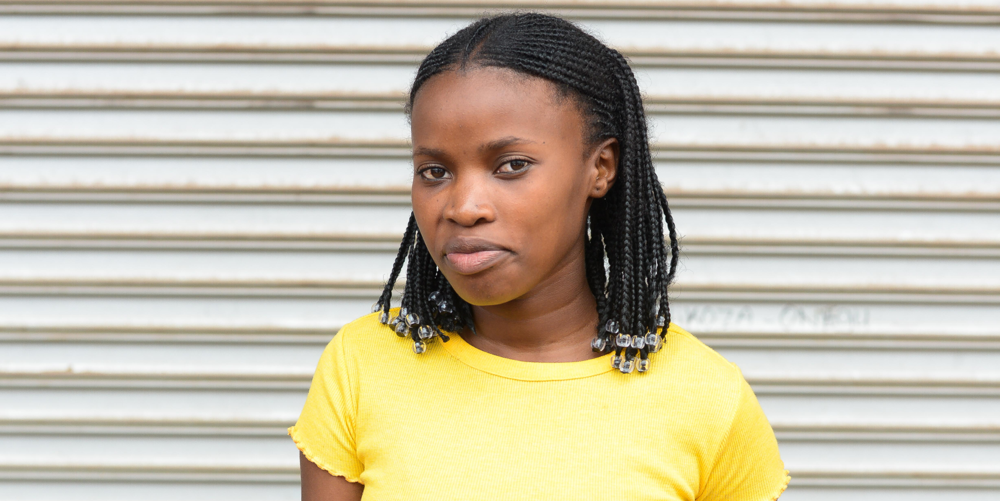

ABOUT
My name is Thembela Selani. I was born on the 24th of April 1999. I grew up in Eastern Cape,Queenstown.
I completed my matric in 2016 at Funda Senior Secondary School, I then moved to Cape Town to further my studies.
I registered at Northlink college and completed my N4 in business management.
In the year 2019, i joined a youth development programme called Naspers Labs
where i learnt personalised learning through an adaptive online learning and development platform, that includes hard and soft skills,
that is where i was also introduced into an opportunity of coding by Umuzi Academy which is where i'm currently at right now.
I love nature because i believe that in a world without it depression would rule. I love learning new things and challenges just to keep myself busy.
My favourite quote of all times is "the best way to predict the future is to create it" -Peter Drucker